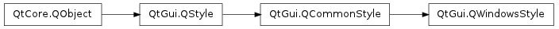

QWindowsStyle¶

Inherited by: QPlastiqueStyle, QCleanlooksStyle, QGtkStyle
Detailed Description¶
The PySide.QtGui.QWindowsStyle class provides a Microsoft Windows-like look and feel.
This style is Qt’s default GUI style on Windows.

See also
QWindowsXPStyle QMacStyle PySide.QtGui.QPlastiqueStyle PySide.QtGui.QCDEStyle PySide.QtGui.QMotifStyle
- class PySide.QtGui.QWindowsStyle¶
Constructs a PySide.QtGui.QWindowsStyle object.